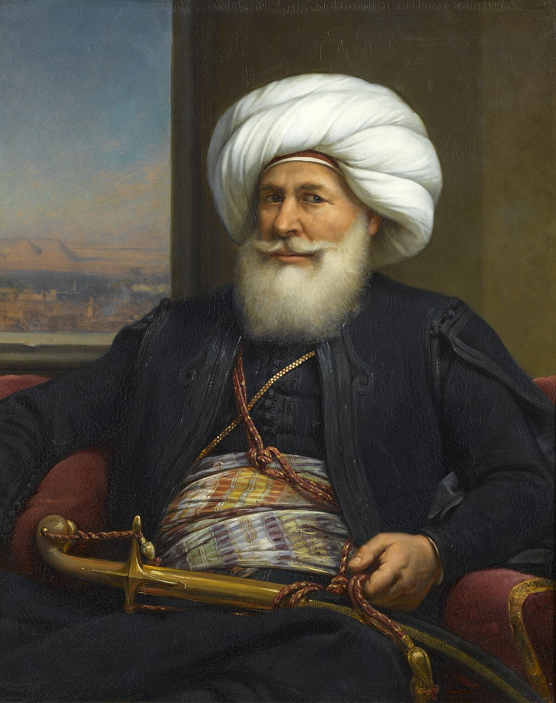

عزيزي القارئ هذه المعلومات من مصادر موثوفة وأخذناها من كتاب اسرة محمد علي لسهير حلمي ننصحكم بعدم زيارة أي موقع إلا بالتحقق من مصدر المعلومات اللتي قدمها
يحكي هذا الكتاب عن محمد علي باشا الذي استقل بايالة مصر من الدولة العثمانية وجعلها دولة مستقلة وقوى اقتصادية عظمى وكانت تهدد كبار الدول مثل بريطانيا وفرنسا والدولة العثمانية ف مصر بلد الحضارات اما فرعونية او اغريقية وفي النهاية اسلامية دعونا نقرأ ونستمتع و ندرس كيف استقل محمد علي بحكم مصر ومن هم الاسرعة العلوية وكيف انهارت هذه الاسرة حتا تحولت مصر جمهورية بعد الاحتلال لانجليزي لمصر :
الاطراف : مصر و سوريا بدعم من معظم الدول العربية ضد اسرائيل والتي كانت تدعمها الولايات المتحدة الأمريكية
الأسرة العلوية: الأسرة العلوية هي سلالة حاكمة نشأت في العصور الوسطى في الشرق الأوسط، والتي تشير إلى الأسرة التي كان منتمين لها أفراد معينون، بما في ذلك مصطلح الأسرة العثمانية. في سياق مصر، يُشير غالبًا إلى سلالة محمد علي باشا وأحفاده. استقلال محمد علي باشا في مصر: في بداية القرن التاسع عشر، كانت مصر تتبع حكم الدولة العثمانية. محمد علي باشا كان قائدًا عسكريًا مميزًا في الجيش العثماني، وقاد حملة عسكرية ناجحة في مصر. بعد الاضطرابات والصراعات الداخلية والخارجية، نجح محمد علي في تحقيق الاستقلال عن الدولة العثمانية في عام 1805. أهم المعارك: معركة أبو قير (1820): حيث هزم محمد علي باشا الجيش العثماني والجيش البريطاني، مما زاد من قوته في مصر. معركة حلب (1821): انتصر فيها على الجيش العثماني وأظهرت قوته العسكرية. انهيار الأسرة العلوية: نهاية الحكم العلوي في مصر (1952): انقلبت القوات الوطنية في مصر بقيادة جمال عبد الناصر ضد الملك فاروق، وهو من أفراد الأسرة العلوية. بعد الثورة، تم إلغاء النظام الملكي، وأسس عبد الناصر جمهورية مصر العربية.